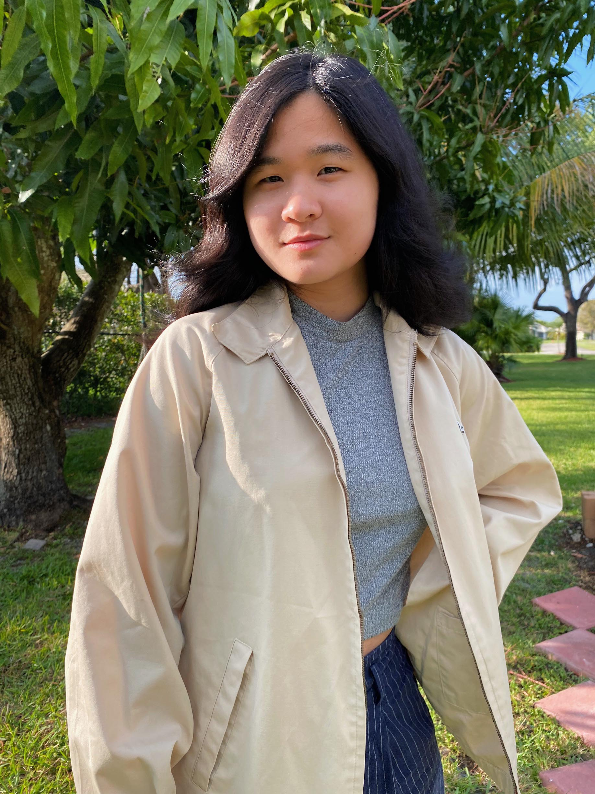

Catherine Chen is a multi-award-winning animation filmmaker based in Los Angeles, CA and West Palm Beach, FL. Upon graduating from USC's School of Cinematic Arts, she became a Semi-finalist for the Student Academy Awards with Yuan Yuan and the Hollow Monster , a film she wrote, directed, and produced.
Catherine is also a TV writer and storyboard artist. She develops TV shows and started her own animation and IP development studio, Yuan Yuan Animation. She loves working with her team to make things happen.
For fun, she draws on Instagram. She loves her pet guinea pigs and even made a TV pilot and book about them.